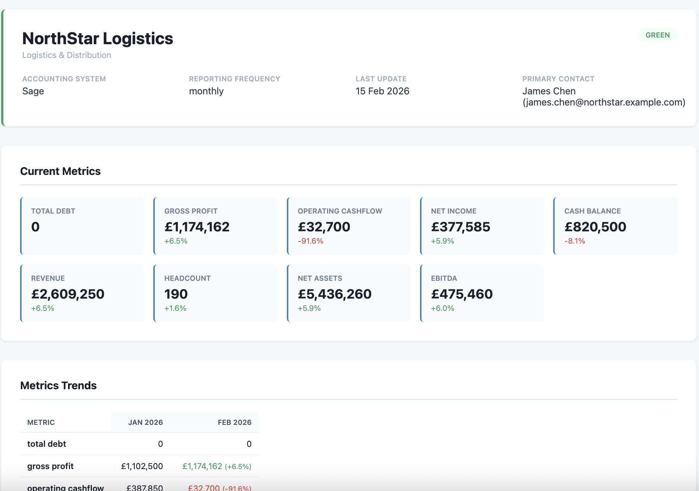
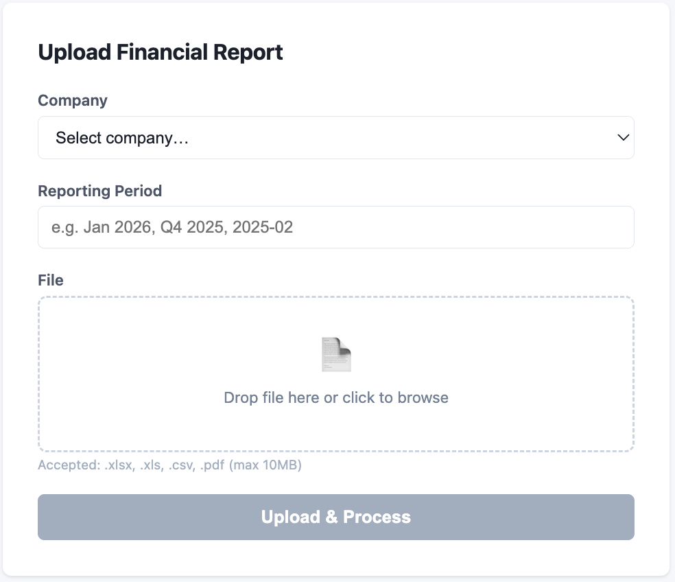
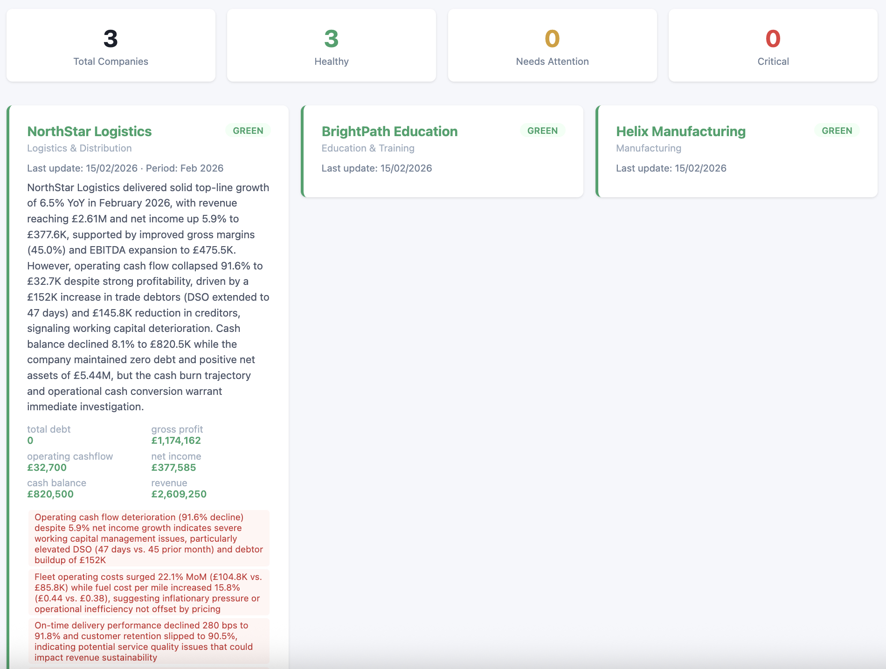

A GCP-native financial data normalisation engine for private equity fund managers.

PE CoPilot is a data normalisation engine built for private equity fund managers. Portfolio companies submit financial reports in wildly inconsistent formats — different labels, different accounting conventions, different file types. PE CoPilot ingests all of it and produces unified, comparable metrics through a six-layer processing pipeline powered by AI.
In private equity, every portfolio company reports differently. One sends a Sage export as Excel, another sends Xero CSVs, a third submits PDF scans from QuickBooks. The fund team has to manually reconcile all of this into a single view just to compare performance across the portfolio. It's slow, error-prone, and doesn't scale.
PE CoPilot automates the entire workflow. Files are uploaded via API, parsed automatically (Excel, CSV, or PDF), then run through an AI-driven mapping layer that normalises raw labels into nine canonical metrics: Revenue, Gross Profit, EBITDA, Net Income, Cash Balance, Total Debt, Net Assets, Operating Cashflow, and Headcount. Deterministic validation rules catch errors before anything reaches the dashboard.


The backend is a FastAPI application running on Google Cloud Run, containerised with Docker. Firestore handles the database layer, Cloud Storage manages file uploads, and Pub/Sub provides event-driven messaging between pipeline stages. Claude Sonnet handles the heavy lifting of financial label extraction, while Claude Haiku generates executive summaries — a tiering strategy that cut token costs by around 40–50%.
The processing pipeline has six layers: extraction (openpyxl, pandas, pdfplumber), calculation (company-specific derived metrics), AI normalisation, validation (completeness and variance checks), sanity checks (sign constraints, accounting identities), and AI summary generation.
The biggest challenge was handling the sheer variety of financial report formats. Even within a single accounting system, companies customise their exports in unpredictable ways. Building robust parsing that could handle edge cases without breaking the pipeline required extensive testing — there are 224 automated tests covering the core logic, all running in under two seconds with mocked cloud services.
Planned features include email ingestion (so companies can just forward reports), digest reporting, Google Sheets export, PDF report generation, OCR support for scanned documents, and multi-currency handling.